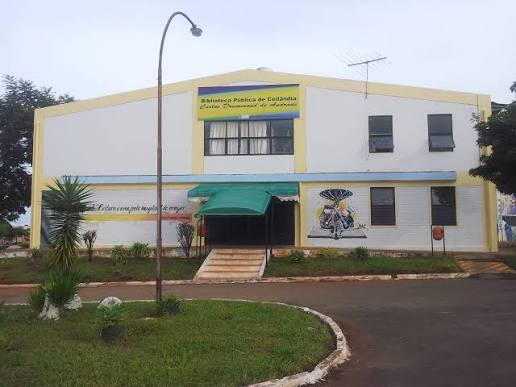

Biblioteca Pública Carlos Drummond de Andrade
📍 Localização: Ceilândia - DF

Espaço de Conhecimento e Cultura
Localizada na Praça do Cidadão em Ceilândia, a biblioteca é um polo essencial de acesso à leitura, pesquisa e atividades educativas para estudantes e moradores de toda a comunidade.